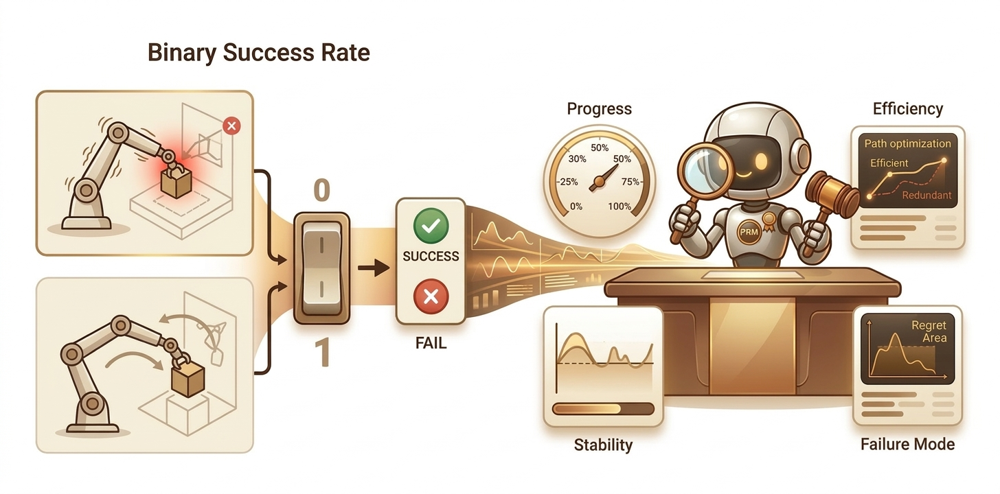
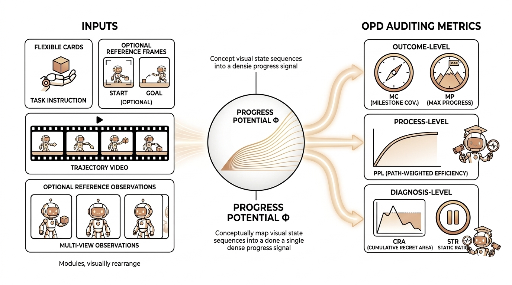
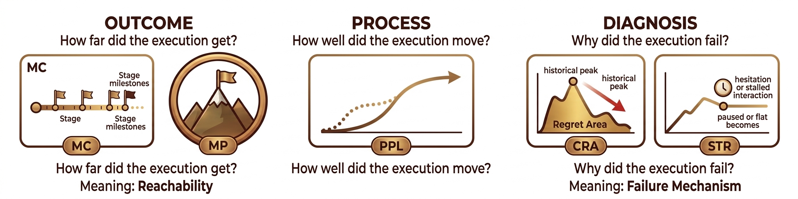
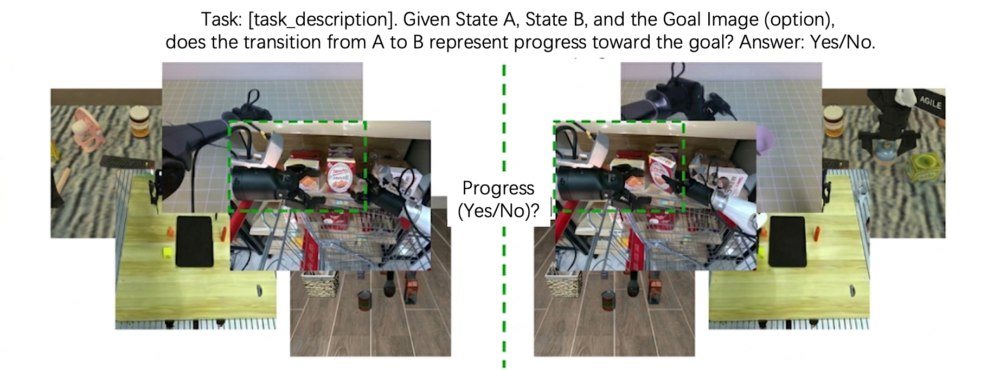

 Beyond the Binary: Dense Auditing for Robots
Beyond the Binary: Dense Auditing for Robots
1. Why Success Rate is No Longer the Full Story
As robotic manipulation graduates from simple "pick-and-place" to complex, contact-rich marathons, relying solely on Success Rate is like trying to judge a symphony by its final note. It's a classic case of throwing the baby out with the bathwater.
The "Success/Failure" binary creates two massive blind spots:
- Resolution Gap: Not all failures are created equal. A robot that misses the goal by a hair's breadth at the 99% mark gets the same "zero" as a robot that freezes the second the clock starts. Without better resolution, we can't tell which policy is actually closer to cracking the code.
- Diagnostic Opacity: Success Rate doesn't distinguish a "flawless victory", efficient and steady, from a "janky success" achieved through trial, error, and sheer luck. When the devil is in the details of contact dynamics and recovery, a single bit of information just doesn't cut it.

2. From Outcome to Audit
To recover the information lost in binary labels, we shift our focus from the finish line to the entire race. For long-horizon tasks, the real difference between models lies in how deep they get into a task, how stable they stay, and exactly where they fail. In the real world, we don't have "privileged" data like exact object positions or contact forces given by simulators.
Our solution is to use the evolution of visual states as a proxy for physical progress. We assign a task-conditioned progress potential Φ(s)∈[0,1] to every state. This turns a simple video into a continuous progress curve that we can compare, break down, and diagnose.

3. What Makes a Model a Qualified Judge?
What are the "ground rules" for a dense evaluator? We believe it must satisfy two axioms:
- Macro-Consistency (The Big Picture): Local progress checks must add up to a coherent story for the entire episode. Mathematically, for any intermediate time t1, the evaluator must satisfy:
This means progress is additive and independent of how you slice the timeline. If a metric drifts depending on the sampling rate, you don't have a reliable audit—you have a mess.
- Micro-Resolution (The Sharp Eye): A judge has to be sensitive to tiny, task-relevant shifts in physical state. If it can't distinguish between a minor victory, a slight slip-up, or just standing still, its response flatlines into a useless constant, and the "dense" part of the evaluation loses its diagnostic teeth.
We chose Process Reward Models (PRMs) because they naturally learn a task-conditioned progress potential Φ(s)∈[0,1], which maps every state to its relative position on the road to completion. By defining the net progress between two states as the difference in their potentials:
Macro-consistency is guaranteed by design—every local nudge is automatically measured on the same global scale. At the same time, because PRMs are trained with dense supervision on "how much further to go," they develop the high-resolution vision needed to spot the subtle physical evolutions that actually matter.
4. OPD: Deconstructing a Single Execution into Three-Tier Signals
Building upon the progress potential Φ, we further construct the OPD (Outcome-Process-Diagnosis) metric system to transform an execution trajectory into interpretable three-tier auditing signals.
- Outcome: How far did it get? The outcome layer characterizes the trajectory's depth of advancement within the task space.
MC (Milestone Coverage) indicates the furthest stage a trajectory reached. It discretizes continuous progress into key milestones to distinguish between an "early collapse" and "failing at the last mile." Physically, it describes the reachability of task stages. When MC = 1, the trajectory has reached the final completion stage; in this sense, it is equivalent to success at the outcome layer.
MP (Max Progress) represents the peak progress value achieved across the entire trajectory. Unlike MC, which emphasizes "which level was reached," MP more directly depicts the trajectory's capability boundary in the continuous progress space: the absolute highest point reached during the execution.
- Process: How well did it go? The process layer characterizes the execution quality of the trajectory itself, rather than merely focusing on ultimate completion.
PPL (Path-weighted Progress Length) measures execution efficiency and trajectory monotonicity. The numerator is the net progress, and the denominator is the total potential energy variation along the entire trajectory. The preceding soft-gating term Φ(sT) penalizes attempts that are not truly completed. Physically, a higher PPL means the robot takes fewer detours, engages in less back-and-forth trial-and-error, and is closer to "advancing toward the goal smoothly and monotonically."
- Diagnosis: Why did it fail? The diagnosis layer goes beyond merely judging success or failure; it further deconstructs the underlying physical mechanisms of failure.
CRA (Cumulative Regret Area) measures the area of regression of the current state relative to the historically best state. It reflects how long and by how much the robot drops back after achieving its peak progress. Physically, it corresponds to instability, regression, and the cost of trial-and-error.
STR (Stagnation Ratio) measures the proportion of time the trajectory spends in a state of virtually no substantive progress. It does not measure "regression," but rather a "lack of movement"—such as hesitation, stuttering, or prolonged local ineffective interactions. Physically, it corresponds to stagnation and decision latency.
These five metrics collectively address five critical questions: how far did it get, what was its peak progress, how smooth was the path, how severe were the regressions, and how long did it stagnate. Together, they form a highly interpretable audit report for a single execution.

5. RoboPulse: The "Physical Microscope" for Evaluator Verification
To verify whether an evaluator possesses true microscopic resolution, we constructed the RoboPulse benchmark. It simplifies evaluation into a pairwise judgment task: given a task description and two states from the same trajectory, the evaluator must determine if the latter state represents "Progress" or "Regression." This design bypasses the need for absolute progress labeling and focuses on the core capability: can the evaluator reliably distinguish directionality when physical changes are minute?
- Dataset Scale: RoboPulse comprises 1,800 pairwise judgment samples derived from 1,622 episodes across 816 tasks.
- Diversity: Data sources include real-world robots, simulations, UMI, and human first-person perspectives.
- Granularity: Samples are categorized into Small / Medium / Large relative progress spans to systematically test the evaluator's physical resolution across different scales.
Experimental Results:
Evaluators based on PRM (Process Reward Models) demonstrate an overwhelming advantage. Taking Robo-Dopamine as an example, it achieves an overall accuracy of 0.83, maintaining 0.80 even in the most challenging "Small-hop" interval.
In contrast, general large models like Gemini and Qwen3-VL-8B only reach overall accuracies of 0.66 and 0.59, respectively. On "Small-hop" judgments, Gemini and GPT-5.2 perform at 0.54 and 0.47—nearly equivalent to random guessing. This proves that the core strength of PRM lies not in coarse semantic understanding, but in the acute capture of the physical evolution process. Once a judge possesses verifiable microscopic resolution, it can be further applied to the systematic analysis of real-world policy trajectories.


On RoboPulse, PRM-based judges demonstrate stronger discrimination ability across different relative progress spans, with the most significant advantage in the most challenging Small-hop interval, indicating higher sensitivity to subtle, task-relevant physical state changes.
6. Dense Trajectory Auditing Reveals Strategic Discrepancies
After constructing and verifying our judge, we applied PRM-as-a-Judge to a systematic audit of real-world policy trajectories. Specifically, we selected 7 manipulation tasks with distinct long-horizon features from RoboTwin 2.0 and performed a unified evaluation of 5 representative baseline policies.
By leveraging the trajectory-level signals provided by OPD, we move beyond simply comparing "whether a model completed a task" to a systematic analysis of progression depth, success quality, and failure mechanisms.
6.1 Phased Reachability and Failure Localization
For long-horizon tasks, binary success rates fail to characterize the progression depth at different stages, often masking the exact point of failure and the true strategic differences between policies. Using the outcome-layer metrics MC and MP, we can directly analyze how far each strategy actually pushed through the task.
- Example (Blocks Ranking RGB): Most strategies show high reachability in the early stages; the MC@25 for ACT, DP, RDT, π0, and OpenVLA-OFT reached 84, 94, 100, 96, and 98, respectively.
- The "Last Mile" Gap: However, at the final completion stage, MC@100 drops to 2, 0, 0, 8, and 0. This indicates that many rollouts are not a "total failure to learn," but rather failures that occur specifically in the late stages.
More importantly, dense auditing distinguishes between strategies that "fail the same way but at different locations." In Blocks Ranking RGB, π0 achieves an MC@75 of 40, while OpenVLA-OFT only reaches 6. Although both ultimately fail, the former's failures occur much closer to the finish line, whereas the latter is prone to collapsing at a much earlier stage.Measuring progression depth only addresses a fraction of the execution process; it remains necessary to further analyze whether successful trajectories exhibit consistent execution quality.

6.2 Execution Quality Under Success Conditions
Reaching the goal does not imply identical execution quality. To further analyze how a model succeeds, we calculated process and diagnosis metrics specifically on successful samples.
- In Handover Mic: DP (Diffusion Policy) success samples exhibit significantly higher path efficiency and lower regression costs: its success-conditioned PPL reaches 94.9 with a CRA of only 0.26.
- Comparison: Conversely, OpenVLA-OFT shows a CRA of 2.55, indicating its success is often accompanied by redundant corrections and repetitive adjustments.
This reveals a stable "strategy-layer" phenomenon: execution precision and overall reliability are not always aligned. While DP produces the highest execution quality when it succeeds, its overall completion rate is not dominant. Some strategies, once successful, demonstrate extreme precision, but this high-quality performance may not stably cover a wider range of rollouts.

6.3 Failure Mechanisms and Strategy Fingerprinting
Beyond locating where a failure occurs, dense auditing analyzes how a failure forms. Using CRA and STR, we can deconstruct "failure" from a single label into distinct physical mechanisms.
- Instability vs. Stagnation: In Place Bread Basket, OpenVLA-OFT achieves an MP of 92.61 but suffers a high CRA of 26.25, indicating late-stage instability and severe regression. In contrast, ACT has a lower MP of 73.11 but a high STR of 65.38, pointing to an early-stage, stagnation-led failure.
- The "Failure Fingerprint": While both are recorded as failures, their mechanisms differ: the former "drops the ball" just as it nears completion, while the latter stays trapped in ineffective interactions.
These failure fingerprints provide clear directions for optimization: Stagnation-type failures suggest a need for improved contact maintenance and end-effector stability, while Regression-type failures indicate a need for enhanced error absorption and closed-loop correction capabilities.

7. Interactive Trajectory Explorer
Experience the demo firsthand below. As you drag the timeline, the page dynamically aligns the video playback with the real-time progress curve, highlighting the exact position within the full trajectory. The five core metrics for the episode—MC, MP, PPL, CRA, and STR—are updated and displayed concurrently.
This module provides a complete temporal audit of an individual execution. Watch as upward trends, regressions, and stagnations on the curve perfectly mirror the robot's physical actions, enabling a precise, frame-by-frame understanding of the rollout's evaluation.
8. Conclusion
What PRM-as-a-Judge introduces is not merely a supplement to the traditional success rate, but a fundamental shift in robot evaluation: moving from binary endgame judgments to the precise characterization of the execution process itself. Through task-conditioned progress potential, the trajectory-level OPD metric system, and the systematic verification of microscopic resolution via RoboPulse, we transform an execution trajectory—once reductively summarized as a simple success or failure—into interpretable, comparable, and diagnosable process signals.
For increasingly long-horizon and complex robotic tasks, a single binary success label is no longer sufficient to fully capture the nuances of model behavior. Fine-grained trajectory auditing not only reveals the intrinsic differences between policies in terms of progression depth, execution quality, and failure mechanisms, but it also provides a highly targeted foundation for downstream model analysis and system refinement.
Author Team
Core Team
We are proud to note that all core team members contributed equally to the success of this project.
- Yuheng Ji (Team Leader)
- Yuyang Liu
- Huajie Tan
Other Contributors
Xuchuan Huang, Fanding Huang, Yijie Xu, Cheng Chi, Yuting Zhao, Huaihai Lyu, Peterson Co, Mingyu Cao, Qiongyu Zhang, Zhe Li, Enshen Zhou
Advisors
Pengwei Wang, Zhongyuan Wang, Shanghang Zhang, Xiaolong Zheng
Citation
If you find our work helpful, please cite us:
@article{xxx,
title = {xxx},
author = {xxx},
journal = {xxx},
}Thank you!